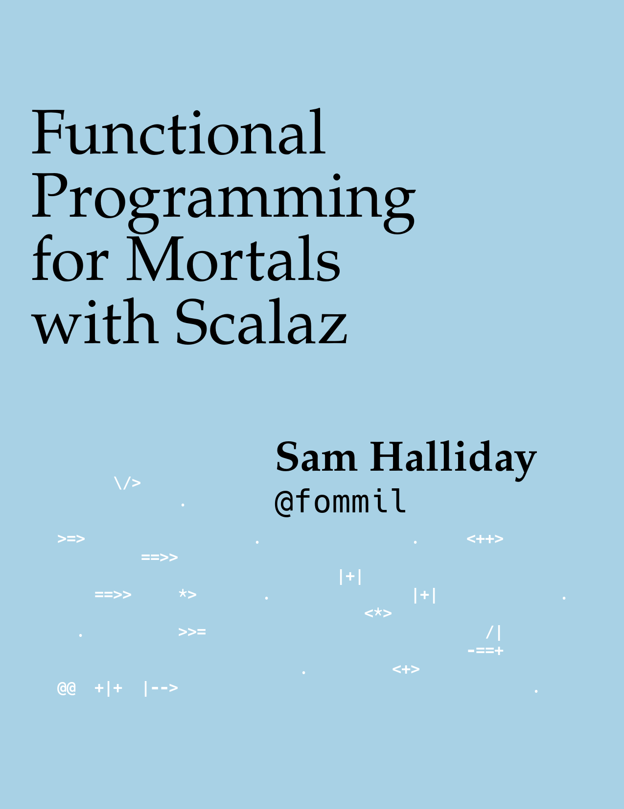

Divide, conquer, apply, choose, and altly… et Empera
Sam Halliday (@fommil)
Scala in the City 2020, fommil.com/sitc20 (Recording Available)
Introduction
Who knows?
- what a typeclass is?
- the Haskell, Scalaz or Cats hierarchy?
- shapeless or magnolia?
- Emacs?
- everybody raise your hand
http://leanpub.com/fpmortals

Scala
Typeclasses
ADTs
case class— productssealed trait— coproductsobject,Int,String(etc) — values
sealed trait Geometry
case class Point(vs: (Double, Double)) extends Geometry
case class MultiPoint(vs: List[(Double, Double)]) extends Geometry
case class LineString(vs: List[(Double, Double)]) extends Geometry
case class MultiLineString(vs: List[List[(Double, Double)]]) extends Geometry
case class Polygon(vs: List[List[(Double, Double)]]) extends Geometry
case class MultiPolygon(vs: List[List[List[(Double, Double)]]]) extends Geometry
case class GeometryCollection(geometries: List[Geometry]) extends Geometry
sealed trait GeoJSON
case class Feature(props: Map[String, String], geo: Geometry) extends GeoJSON
case class FeatureCollection(features: List[GeoJSON]) extends GeoJSONInstances
implicit val NumericDouble: Numeric[Double] =
new Numeric[Double] {
def plus(x: Double, y: Double): Double = x + y
def times(x: Double, y: Double): Double = x * y
def negate(x: Double): Double = -x
def zero: Double = 0.0
def compare(x: Double, y: Double): Int = Double.compare(x, y)
// optimised
override def lt(x: Double, y: Double): Boolean = x < y
override def gt(x: Double, y: Double): Boolean = x > y
override def abs(x: Double): Double = Math.abs(x)
}object ComplexDouble {
implicit val numeric: Numeric[ComplexDouble] =
new Numeric[ComplexDouble] {
def plus(x: ComplexDouble, y: ComplexDouble): ComplexDouble = ...
def times(x: ComplexDouble, y: ComplexDouble): ComplexDouble = ...
def negate(x: ComplexDouble): ComplexDouble = ...
def zero: ComplexDouble = ...
def compare(x: ComplexDouble, y: ComplexDouble): Int = ...
}Typeclass Derivation
implicit def numericComplex[T: Numeric]: Numeric[Complex[T]] =
new Numeric[Complex[T]] {
def plus(x: Complex[T], y: Complex[T]): Complex[T] = ...
def times(x: Complex[T], y: Complex[T]): Complex[T] = ...
def negate(x: Complex[T]): Complex[T] = ...
def zero: Complex[T] = ...
def compare(x: Complex[T], y: Complex[T]): Int = ...
}Scalaz

Typeclass Derivation
scalaz-deriving

package scalaz
trait InvariantFunctor[F[_]] {
def xmap[A, B](fa: F[A], f: A => B, g: B => A): F[B]
}The Cool Bit
Divide and Conquer
Code Reuse
Decidable and Alt
| Typeclass | method | given | signature | returns |
|---|---|---|---|---|
Applicative |
apply2 |
F[A1], F[A2] |
(A1, A2) => Z |
F[Z] |
Alt |
altly2 |
F[A1], F[A2] |
(A1 \/ A2) => Z |
F[Z] |
Divisible |
divide2 |
F[A1], F[A2] |
Z => (A1, A2) |
F[Z] |
Decidable |
choose2 |
F[A1], F[A2] |
Z => (A1 \/ A2) |
F[Z] |
implicit val decidable = new Decidable[Equal] {
...
def choose2[Z, A1, A2](a1: Equal[A1], a2: Equal[A2])(
f: Z => A1 \/ A2
): Equal[Z] = new Equal[Z] {
def equal(z1: Z, z2: Z): Boolean =
(f(z1), f(z2)) match {
case (-\/(s), -\/(t)) => a1.equal(s, t)
case (\/-(s), \/-(t)) => a2.equal(s, t)
case _ => false
}
}
}Examples
object Vader {
private val g: Vader => (String, Int) = d => (d.s, d.i)
implicit val equal: Equal[Vader] =
Divisible[Equal].divide2(Equal[String], Equal[Int])(g)
}object Darth {
...
private def f(e: Vader \/ JarJar): Darth = e.merge
implicit val default: Default[Darth] =
Alt[Default].altly2(Default[Vader], Default[JarJar])(f)
}